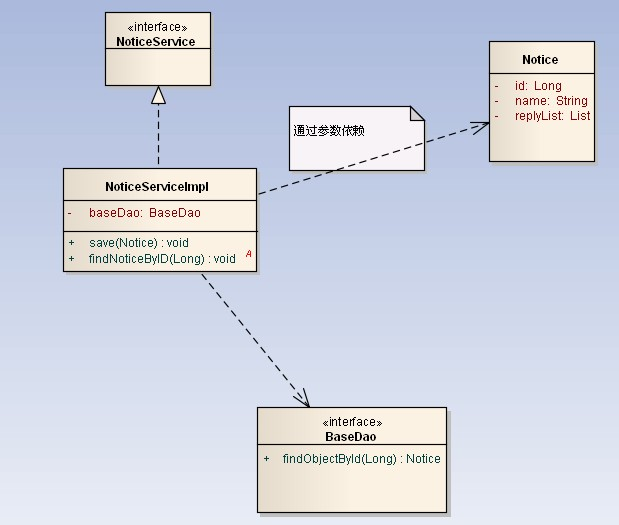

UML
类图
基本元素
-
访问控制
-
public属性为
+； -
private属性为
-； -
protected属性为
#
-
public属性为
相互关系
泛化（generalization）

实现（realization）

组合（composition）
类型是B就是为了作为类型A的成员而存在的，不能单独存在。A的实例不存在时，B的实例 也要销毁。
鼻子上的孔叫鼻孔，没有鼻子光有一个孔不叫鼻孔。

聚合（aggregation）
类型是B就是为了作为类型A的成员而存在的，但B可以在没有A实例的时候单独存在。
轮胎就是为作为车的一部分而存在的，但没有车时，轮胎还是轮胎。
关联（association）
类型A中的成员类型是B。但是B不是为了作为A的成员而存在的。
汽车需要人来驾驶，但人不是为了汽车而存在的。如果没有汽车，人还是可以作为一个 独立的类。

依赖（dependency）
类型A不把B作为成员属性，而是函数的参数或是局部变量。临时用用一下。
有一个洗车的方法，该方法需要传入一个洗车设备，这个洗车设备并不是车的一部分， 只有洗车的时候才会临时用到该设备。

数量描述
-
1：一个 -
*：零个或多个 -
1..*：一个或多个 -
0..1：零个或一个

- 一个Car有一个Person（司机，这里person指司机），因此在Person端有个符号1；
- 一个Person（司机）开一辆车Car，因此在Car端有个符号1；
- 一个Car有四个Tire（轮胎），因此在Tire端有个符号4；
- 一个Tire仅能在一个Car上，因此在在Car端有个符号1。需要注意的是，如果认为 “一个Tire可能在一个Car上，也可能不在Car上”那么Car端的符号为0..1；
- 一个Car只有一个Brand（标志），所以在Brand端符号为1；
- 一个标志会在0量或多辆车上，所以Car端符号为*。